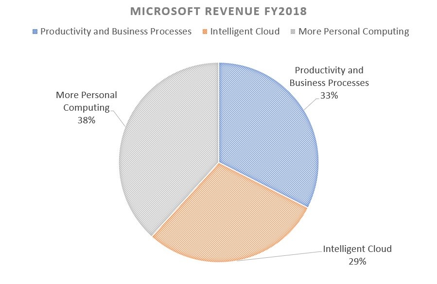

In this day and age, we are always connected to the internet. While you may not realise it, but someone somewhere knows about you in more details than you yourself. This is not a speculation and I am not paranoid. If you are interested, check out Wikipedia for Social Profiling.
Since you are reading this, I hope you are not the type of person who goes like “Yes, they are tracking me, so what?”. I might want to change your opinion in a future blog and you might wanna subscribe to know as soon THAT blog goes live.
According to this report by Norton Inc, more than 3,800 breaches were reported in 2019 alone with more than 4 billion records being compromised in them. This was far greater than ever before with a year-to-year growth rate of 54% as compared to 2018. Keep in mind that these are the ones which were actually reported.
In a noted incident, Yahoo did not report a breach of its emails and passwords for 3 years and kept it a secret up to 2016!
With this is mind, the next obvious question that comes to mind is whom can you actually trust with your information?
Information leaks can happen anywhere; while your data is being processed in a compromised server or while being transmitted over a compromised network. But it can also be targeted while it is simply being stored at some remote data centre.
Not all leaks are actually carried out by hackers. Sometimes, companies go all the way to serve user data directly to interested companies who are more than happy to pay for it. Like when Facebook served data to Cambridge Analytica without user consent and possibly allowed the US elections to get rigged.
Tech firms did not prioritise following ethics regarding user data unto now because there were no financial gains in doing so. But now, we have seen how not protecting users’ data can lead to negative financial outcomes. When Facebook was exposed of doing business with Cambridge Analytica in 2018, it saw rapid downfalls in share price and thus a major devaluation.
Now Facebook has entered every home and every business across the world through WhatsApp, Instagram and Messenger. They brought out end-to-end encryption to gain trust and marketed it as an in-penetrable security layer. Only a while ago we found out that this wall of encryption was being bypassed by governments for months (Pegasus Spyware).
Google earns the vast majority of its revenue from its Ads services. Its Ads service thrives on the vast base of information gathering that is laid down by its extensive network of trackers and cookies. On a typical Android phone for example, Google Play Services collects user information that consisting of real-time location, your search queries, which apps you use more and which apps you use less, which sites you visit, device usage patterns and more. This allows them to create a thorough profile of what you are and what you like (and not like) about this world. While it may seem okay to you that the targeted Ads that they are showing are alright because it is ultimately helping you see ads that you are actually interested in. But have you ever talked about something, picked up your phone five minutes later and found an advertisement for that exact same thing?
While Google may try to convince you that they are only collecting information anonymously and no personal data is being collected, it is impossible for us to trust them on this when we know that 84.8% of their revenue comes from Ads.
Apple and Microsoft are much better off in this regard since we know that they have no financial gains selling off user data. In fact, iPhone sales account for about 70% of Apple’s Revenue as of Q1 2019. They do not need to sell user data to avoid going bankrupt, they are financially secured anyway. 
You can start taking control over your information from today itself. For instance, when you see a or button, try to avoid that and start fresh instead. Even though this might cause you to spend 5 more minutes to set things up, logging in to other websites using facebook/google credentials allows them to track you more thoroughly. Think about it, why do they offer free login on other platforms? Its because they are benefiting from it through the additional data they are able to collect about you.
There is no such thing as absolute trust, but some companies are definitely more concerned about you than others. On a personal level, I use an always updated version of Firefox and prefer Outlook over Gmail. My YouTube tracking is off and Google search results are not stored on the servers.
There are better alternatives for most of the offering from Google and Facebook. Twitter CEO Jack uses DuckDuckGo instead of Google Search and he seems to think its app is even better than Google’s.
I love @DuckDuckGo. My default search engine for a while now. The app is even better!
— jack 🌍🌏🌎 (@jack) November 27, 2019
It is bad to overthink, but at least give it a thought. After all, its your information in someone else's hands. :)
Subscribe For Future Blogs